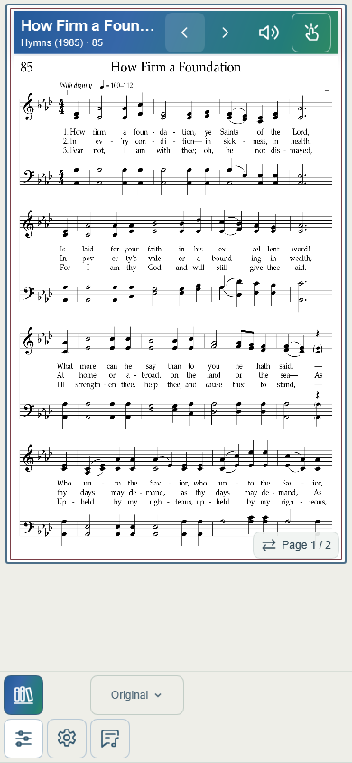
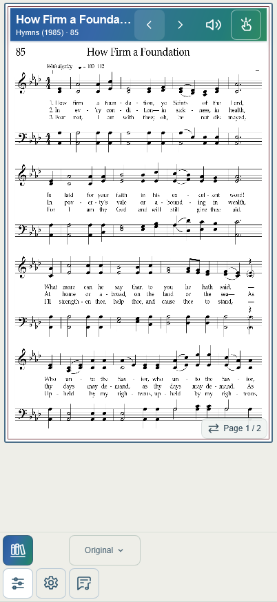
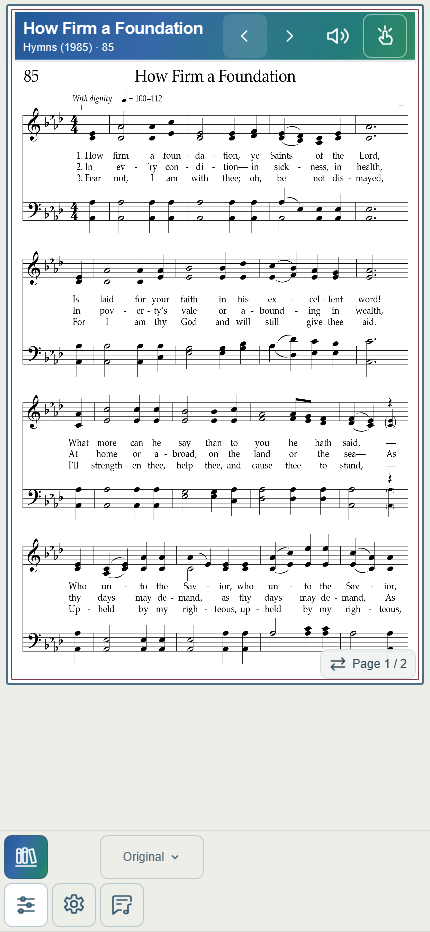
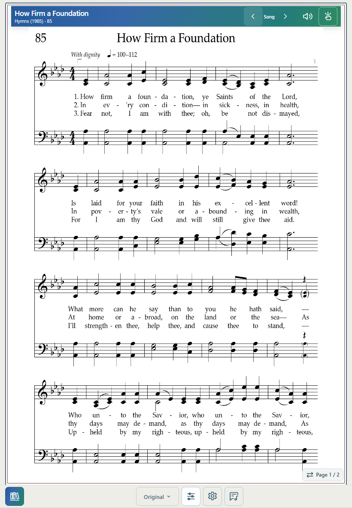
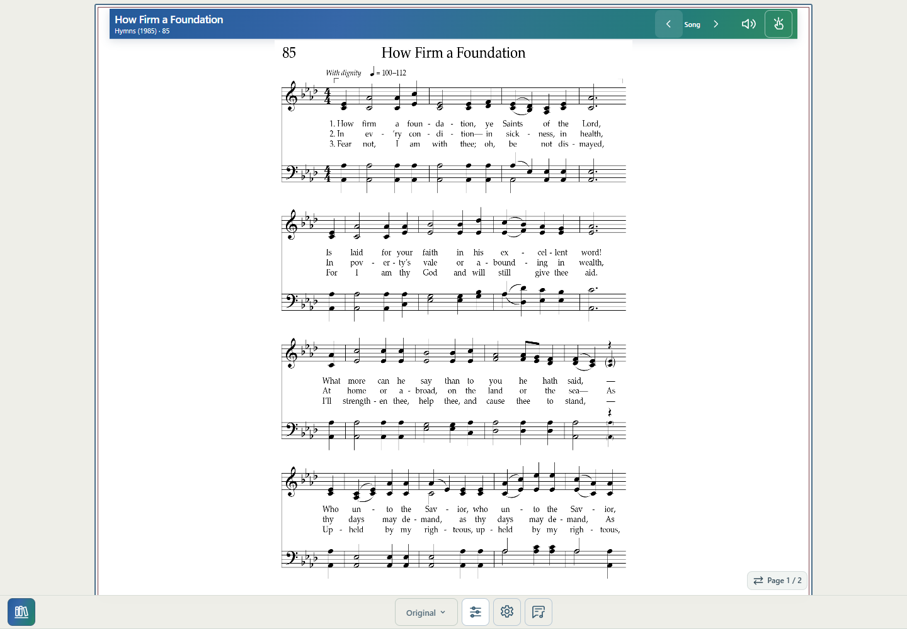

Baseline: 991cd43. The one-result navigation issue is confirmed and corrected. The persistent physical iPhone footer failure remains unconfirmed: baseline emulation recovered after the visual viewport settled. This release strengthens Search exit focus handling and diagnostics without rewriting footer or pagination behavior.
Before: row click → library open() captures orderedSongs → loadSong() selects representation → library.navigating() adopts pendingSongSet and clearLeavingSearch() removes query → beginSelection() clears old score/state and sets loading → library.showScore() calls blurSearch(), hides Library and reveals Score → source/PDF loading or engraving → opened()/finishSelection(). A browser may itself blur on pointer-down; the baseline WebKit trace did so. The explicit application blur nevertheless occurred late in selection.
After: row click → capture query, displayed playable IDs and underlying context → if exactly one playable Search result, compute the same source/List/Favorites/sort set with only query removed → set pendingSongSet → explicitly blur Search → loadSong() → existing navigating/clear-query/beginSelection/showScore/load/render sequence. Focus-retaining pointer simulation verifies Search is blurred while loading is still false. No arbitrary delay was added.
Existing visualViewport resize/scroll handling remeasures the footer and existing geometry-driven resize scheduling refits structured views. Three repeated Search openings (85, 87, 88) with an animation-frame keyboard dismissal each produced exactly one final refit; no accumulated inset or idle render loop. The release does not alter existing debounce durations, engraving, scale selection, or pagination policy.
Before, Search 85 produced one ID: previous=start-of-set, next=end-of-set, with busy/loading false. After, Hymns/Page-number context contains 335 playable IDs: #85 previous #84, next #87; #87 previous #85, next #88. #86 remains visible in the 341-entry Library but excluded from navigation. Query clears on exit and stays cleared on return.
Single-result tests retain title sort, Favorites-only sets, manual/title-sorted Lists and Files source. A genuinely single-song underlying Favorites set correctly keeps both boundaries disabled. Multi-result Search retains its captured Search order. Separate existing actual Files/List workspace and Lyrics-return checks pass.
402px baseline: layout height 874, keyboard visual height 380 with offsetTop 30; footer 308–410, inset 464, reserved height 566. After keyboard dismissal, direct and Search both footer 772–874, inset 0, reserved height 102. Thus the baseline already recovered; these values do not prove a physical Safari fix.
After change, all 25 direct/Search pairs match exactly in footer/toolbar/visible controls, reservation/inset, calculated page budget and tested structured notation scale, system geometry and page groups. Phone widths 390/402/430 each cover 84/85/87/88/30/201/223; tablet 820 and desktop 1440 cover 85/223. Original is checked throughout; Full/Transpose for 85/223, Melody and return-to-Transpose for 85. #223 also engraves at reduced keyboard height before settling. Inactive structured diagnostic attributes are excluded when comparing PDF views. No physical Safari/PWA claim is made.
| Width | Hymn | Footer top–bottom | Reservation | PDF-view budget | Full zoom | Full pages | Melody pages | Direct vs Search |
|---|---|---|---|---|---|---|---|---|
| 390 | 84 | 742–844 | 102px | 648 | — | — | — | Identical |
| 390 | 85 | 742–844 | 102px | 648 | 0.67 | 3 | 2 | Identical |
| 390 | 87 | 742–844 | 102px | 648 | — | — | — | Identical |
| 390 | 88 | 742–844 | 102px | 648 | — | — | — | Identical |
| 390 | 30 | 742–844 | 102px | 648 | — | — | — | Identical |
| 390 | 201 | 742–844 | 102px | 648 | — | — | — | Identical |
| 390 | 223 | 742–844 | 102px | 648 | 0.56 | 4 | — | Identical |
| 402 | 84 | 772–874 | 102px | 678 | — | — | — | Identical |
| 402 | 85 | 772–874 | 102px | 678 | 0.55 | 2 | 2 | Identical |
| 402 | 87 | 772–874 | 102px | 678 | — | — | — | Identical |
| 402 | 88 | 772–874 | 102px | 678 | — | — | — | Identical |
| 402 | 30 | 772–874 | 102px | 678 | — | — | — | Identical |
| 402 | 201 | 772–874 | 102px | 678 | — | — | — | Identical |
| 402 | 223 | 772–874 | 102px | 678 | 0.57 | 4 | — | Identical |
| 430 | 84 | 830–932 | 102px | 736 | — | — | — | Identical |
| 430 | 85 | 830–932 | 102px | 736 | 0.59 | 2 | 2 | Identical |
| 430 | 87 | 830–932 | 102px | 736 | — | — | — | Identical |
| 430 | 88 | 830–932 | 102px | 736 | — | — | — | Identical |
| 430 | 30 | 830–932 | 102px | 736 | — | — | — | Identical |
| 430 | 201 | 830–932 | 102px | 736 | — | — | — | Identical |
| 430 | 223 | 830–932 | 102px | 736 | 0.55 | 3 | — | Identical |
| 820 | 85 | 1126–1180 | 54px | 1030 | 0.702 | 1 | 2 | Identical |
| 820 | 223 | 1126–1180 | 54px | 1030 | 0.68 | 2 | — | Identical |
| 1440 | 85 | 946–1000 | 54px | 850 | 0.738 | 1 | 2 | Identical |
| 1440 | 223 | 946–1000 | 54px | 850 | 0.9 | 3 | — | Identical |
URL-gated report version 5 adds entry path/query/result count/displayed playable IDs/fallback context, pending set and current ordered IDs, active element/Search focus, and bounded transition records for before/after blur, Library hiding/Score visibility, viewport events and render completion. The settled report retains full footer and score-budget data. Normal UI stays unchanged.
Commands: node tests/search-score-diagnosis.mjs (baseline capture), node tests/search-score-context.mjs, node tests/search-score-transition.mjs (checkpoint resume for unfinished cases after correcting a PDF-only test comparison), node tests/search-score-cycles.mjs, node tests/release-origins-diagnostics.mjs; JavaScript syntax checks; git diff --check. No broad harmony, Melody or Library suites.
Product changes: library.js, layout-state.js, layout-debug.js, sw.js (v219). Tests: four new search-score scripts and diagnostic-version update to release-origins-diagnostics.mjs. Reports: this HTML/JSON and five screenshots. No source MXL/PDF, generated harmony, app.js, footer-viewport.js, navigation.js, CSS, Lists/Files implementation, or playback changes.
Full measured results. Commit and verified deployment status are reported with delivery.




